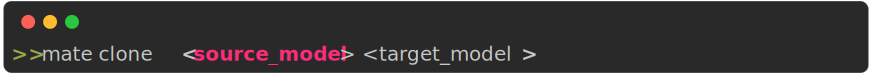
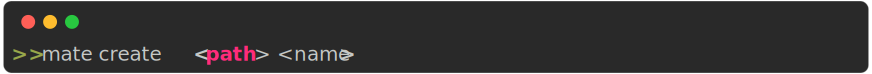
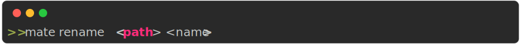

Mate CLI
The following commands work within a mate project folder, that is, where the
mate.json file is located. This file will be generated by the
init command (see below).
Cli Parser
Mate’s cli parser is a simple parser that parses the command line arguments and calls the appropriate method on the Mate class.
Notice that for boolean arguments, you can use either false or False, true or True. And for None you can use either null or None.
Example


Params
-
source_model :
str: Path to the source model -
target_model :
str: Path to the target modelClones a module

Params
-
path :
str: Path to the module to create -
name :
str: Name of the module to createCreates a new module

Params
-
source :
str: Path to the object to exportExports a function/class from a module

Params
-
project_name :
str: Name of the project -
params :
str: Parameters to pass to the project. These are the same key-value pairs that are in themate.jsonfile (check out that section).Creates a new mate project in the current folder.
Example
mate init my_fancy_project venv=false

Params
-
url :
str: URL to the package to installInstalls a module from url. The URL must be a git repository and point to the full path of the module.

Params
Prints the markdown documentation of the project

Params
-
commands :
str:Executes inside the python venv
mate pip install numpy

Params
-
target :
str: Path to the module to removeRemoves a module

Params
-
path :
str: Path to the module to rename -
name :
str: New name of the moduleRenames a module.

Params
Prints results

Params
-
experiment_name :
str: Name of the experiment to run -
command :
str: Command to runRuns an experiment with the given command

Params
-
path :
str: Path to the module to showShows information about a module or experiment.

Params
-
svg :
bool: Export result as svg=FalsePrints a summary of the mate project.

Params
-
command :
str: Command to run in the virtual environmentExecutes inside the python venv